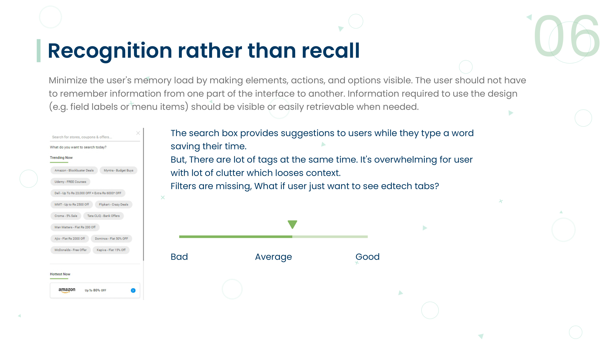
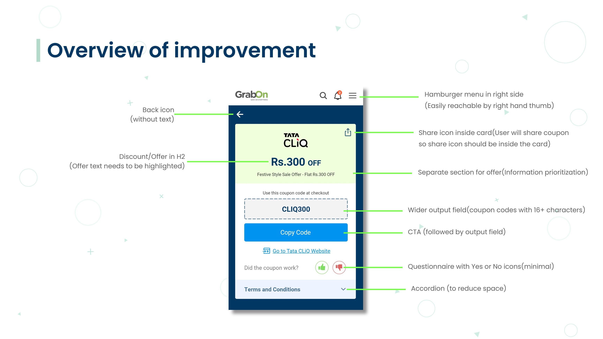

GRABON · HEURISTIC EVALUATION + REDESIGN · UX RESEARCH
GrabOn — Usability Audit & Redesign
GrabOn is India's largest coupon platform — millions of users rely on it to find and redeem discount codes. A heuristic evaluation revealed specific friction points in the coupon card itself: a code field too narrow to read, terms so long they buried the call to action, and a menu placed where no thumb could comfortably reach it.
View full PDF ↗
01 — OVERVIEW
India's largest coupon platform
GrabOn aggregates discount codes, cashback offers, and deals from thousands of brands across ecommerce, travel, food, and entertainment. Users browse and apply codes during checkout on third-party sites — making the coupon card the most important UI element in the product.
A coupon that's hard to copy, read, or understand is a coupon that doesn't get used — directly reducing both user satisfaction and GrabOn's conversion metrics. This project evaluated the coupon card against Nielsen's heuristics and redesigned it based on the findings.
02 — HEURISTIC EVALUATION
What the evaluation found
Visibility of System Status
Users can see their saved coupons, recently used codes, and expiry dates. Status is clearly communicated.
User Control and Freedom
Once a coupon is copied, there's no "uncopy" — which is expected — but the overflow menu (three dots) is placed in the top-right corner, outside comfortable one-handed thumb reach for most users.
Consistency and Standards
The code field width varies across different coupon cards — sometimes truncating long codes (e.g. "SAVE20EXTRA" becomes "SAVE20EX..." with no tap-to-expand). This breaks a basic expectation of code legibility.
Recognition Over Recall
Terms and conditions are displayed as a full-text block by default — 3–8 lines of fine print that visually dominate the card. The primary action (Copy Code) is buried below the terms.
Aesthetic and Minimalist Design
The coupon card contains: brand logo, discount value, offer title, code field, terms (3–8 lines), expiry, and share/save/report actions — all simultaneously visible. The visual hierarchy makes it hard to find the code field quickly.
03 — USERS
Who uses GrabOn and how
The deal hunter
- Searches for coupons before every online purchase
- Uses GrabOn on mobile during checkout — one-handed
- Needs to copy a code quickly and switch back to the retailer
- Has low tolerance for friction at the point of code copying
- Reads terms only if they're suspicious about validity
The occasional saver
- Arrives on GrabOn from a Google search
- Unfamiliar with the platform's layout
- Needs to understand the offer quickly without reading
- More likely to read terms before using
- Converts if the code works on first attempt
04 — KEY INSIGHTS
What drove the redesign decisions
The code is the product — it should be the visual hero
Users come to GrabOn for one thing: the coupon code. Every other element on the card should support that primary goal — not compete with it. The code field needed to be the most prominent element.
Terms don't need to be read first — they need to be available
Most users don't read terms before copying. Progressive disclosure (accordion) lets users who do want to check terms easily expand them, without forcing all users to scroll past them first.
Ergonomics are UX design
Placing a three-dot menu in the top-right on a phone requires a grip shift or two-handed use. Moving actions to the bottom of the card (within thumb reach) is a usability improvement, not just a preference.
05 — REDESIGN
The redesigned coupon card
The redesign applies a clear hierarchy: brand + discount at the top, full-width code field with one-tap copy in the middle, accordion terms below, and action buttons (share, save, report) at the bottom — within thumb reach. The code field is always full-width, truncation is eliminated.

Annotated original card — violations mapped to specific heuristics

Redesigned card — code as hero, accordion T&Cs, thumb-reachable actions
06 — BEFORE VS AFTER
The specific changes made
Before
- Code field: variable width, often truncated
- Terms: 3–8 lines of full text, always visible, above CTA
- Actions: top-right overflow menu, outside thumb reach
- Copy button: small, placed alongside the code field
- Visual hierarchy: brand → title → terms → code → actions
After
- Code field: always full-width, code always fully visible
- Terms: accordion — collapsed by default, expandable on tap
- Actions: bottom bar — share, save, report all within thumb reach
- Copy button: full-width, primary, immediately below code field
- Visual hierarchy: discount → code → copy → terms → actions
07 — KEY LEARNINGS
What this project taught me
Expert evaluation is faster than user research for known friction patterns
A heuristic evaluation identified actionable, specific problems in 3 weeks — problems that a usability study would take 6–8 weeks to surface. The two methods are complementary, not competitive. Start with heuristics, validate with users.
The most important element should be the most prominent
The coupon code is the entire reason someone visits GrabOn — yet it was buried below terms and beside a tiny copy button. Hierarchy should reflect user intent, not just visual convention.
Progressive disclosure is about trust, not just clarity
Accordion terms don't hide information — they put it where users who want it can find it, while not forcing it on users who don't. It's a design that trusts users to seek what they need.
Heuristic evaluation is one of the highest-ROI methods in a designer's toolkit — structured, fast, and directly actionable.